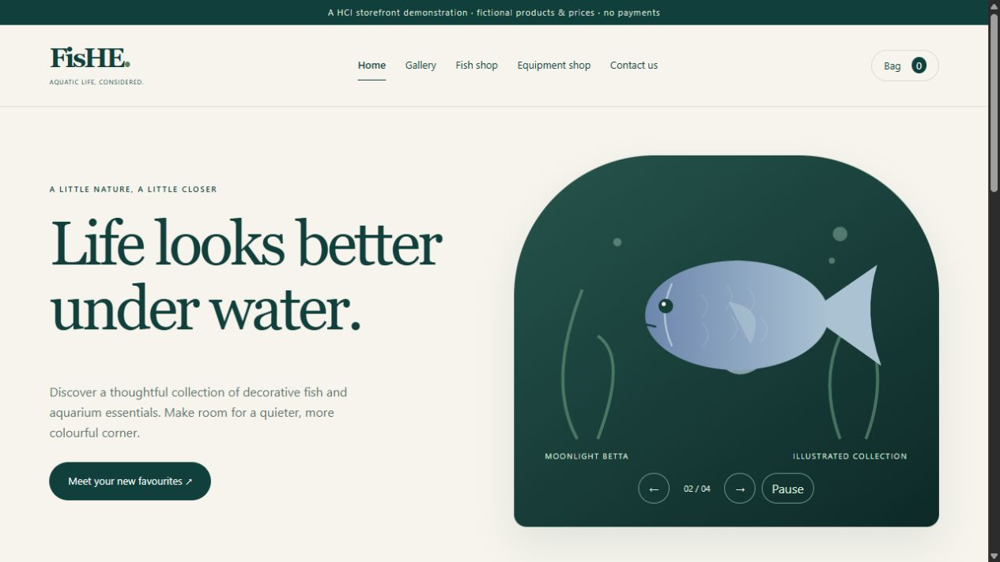

FisHE.
A quieter aquarium storefront, reconstructed from an unfinished HCI brief.
The context
The local 2021/2022 HCI folder contained a FisHE project brief and the original student logo, but no completed website. This is a new 2026 reconstruction of its five-page experience, clearly separated from the original assignment.
What I built
Home and gallery; categorized fish and equipment; live search; a persistent demo bag with quantity controls and totals; local contact validation; responsive layouts; keyboard controls, a pausable jQuery slider and new SVG illustrations.
Static checks and desktop/mobile browser checks passed. Verified combined category/search filtering, quantity totals, bag persistence after reload, simulated order completion, and invalid/valid contact states. Products, prices and orders are illustrative. No payment or email backend is implied.
A closer look
